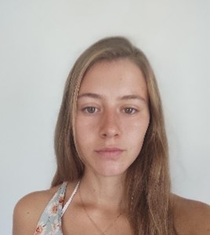

My Resume

Summary
Name: Marija Gajikj
Born: 24.09.1998
Nationality: Macedonian
Highly motivated and hardworking girl, excited to learn new things.
Education
Bachelor in Economics, Ss Cyril and Methodius university of Skopje, Macedonia 2017-2021
High school, Sportska akademija, Skopje, 2014-2017
Experience
Content and Marketing Assistant: 9/2022- Present
Capuli, Basel, Switzerland
- The planning, execution, delivery and correction of creatives for the website
- Creating posts and reels using programs like Canva, Photopea, Photoshop, etc
- Optimization of e-commerce, updating products and texts on the website
- Analysis of information and metrics from Google Analytics, advertising, emails and sell to create growth recommendation reports
Professional handball player: 01/2021 - 05/2021
Rotweiss Thun, Thun, Switzerland
- In Switzerland I have gained so much confidence, to meet new people, to make some hard choices and learn a new language.
Assistant: 11/2019-11/2020
Biobeauty s.r.o, Slovenia
- The planning, execution, delivery and correction of creatives for the website (WordPress)
- Preparing packages and organize the sending of the packages
- Resolving complaints
Languages
- English - Fluent in writing, speaking
- Serbian -Native speaker
- Macedonian - Native speaker
- German - Intermediate
Skills
- Quick learner
- Open minded
- Hard working
- Communicative
Other
Contact me
Hobbies